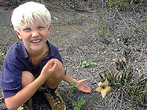

|
|
Fossen var ikke stor, men vakker.
|
Manoa Falls **
Besøkt: 21. august 1999
Vi var der: Ola, Lars, Anders, Siri og Arne
Om turen: Manoa Falls er et av Oahus mest kjente turområder og det ligger i vår dal, nesten i gangavstand fra huset vårt. Det er en ganske kort tur opp en tildels gjørmete sti i en skikkelig Tarzan-skog. Anders prøvde lianene og brølet var bra...
Vi ble frarådet å bade i kulpen oppunder fossen, men mange andre gjorde det. Fossen er ganske liten, men det er en foss. Noe særlig utsikt er det ikke på denne turen.
|
|  |
|
Vi tok imot år 2000 på Puu Pia.
|
Puu Pia ****
Besøkt: 4. september, 8. november 1999 og nyttårsaften 2000
Vi var der: Siri og Arne (4/9), Lars og Siri (8/11)
Om turen: Siri og Arne tok en kjapp ettermiddagstur opp på Puu Pia, en fjellrygg som ligger midt i dalen vår, enda nærmere enn Manoa Falls. Etter en kort vandring på fin sti i stor skog, steg vi opp langs fjellryggen og fikk en kjempefin utsikt over dalen helt ned til Waikiki Beach.
Langs stien var det all verdens blomster og massevis av jordbær-guava. Vi spiste endel og plukket endel med oss og ga til naboer.
I november var både blomster og guava borte. Dessuten regnet det og stien var ganske sølete og sleip. Men utsikten var like fin. Lars og Siri fikk dårlig tid og før de var nede var det nesten mørkt.
|
| |
|
Lars og Anders ser på kvistinga av stien.
|
Kaunala Loop ***
Besøkt: 28. august 1999
Vi var der: Ola, Lars, Anders, Siri og Arne
Om turen: Kaunala ligger helt nord på Oahu, nær kystområdet North Shore. Turen startet med vandring på en skogsveg fra en speidercamp. Vegen går snart over til sti langs åssider og på smale rygger. De var flere fine utsiktspunkt og forseggjorte rasteplasser. Ingen fjelltopper, mest skog, men en fin rundtur. Vi har skrevet en artikkel i Palmeposten om jordbær-guava vi fant på denne turen.
Etter turen dro vi på badetur for å kjøle oss ytterligere ned. Da dro vi til Sharkes Cove.
|
| |
Waimano Ridge ***
Besøkt: 19. september 1999
Vi var der: Siri og Arne
Om turen: Siri og Arne stakk fra ungene og dro av gårde for virkelig å gå på. Dette var en 15 mile tur med bra stigning (knapt 600 meter). Etter litt feilkjøring og feilgang kom vi inn på en fin sti langs en rygg innover en dal ovenfor Pearl Harbor. Det var en lang tur. Mye frukt, bl.a. jordbær-guava og vanlig guava, samt endel vi ikke kjente (sannsynligvis kart av avocado og mango), senket tempoet vårt i perioder.
På en nydelig grasslette oppå en rygg rastet vi. Utsikten var flott. Vi snudde før vi kom helt opp, tanken på ungene som var igjen ble avgjørende. At det begynte å pøse ned gjorde også at beslutningen føltes riktig.
Vi hadde et bra tempo ned, men rakk å plukke et par liter jordbær-guava og 8-10 vanlige guava frukter. Siri lagde senere syltetøy av jordbær-guavaen blandet med ekte jordbær. Det smaker utmerket, men neste gang bør nok steinene i jørdbær-guavaen fjernes.
|
| |
|
Det begynte å mørkne da vi gikk ned mot bilen i dalen.
|
Kuliouou Ridge ***
Besøkt: 10. oktober 1999
Vi var der: Ola, Anders, Siri og Arne (Lars måtte gjøre lekser hjemme)
Om turen: Kuliouou Ridge er en fjellrygg helt sør-øst på Oahu. Vi dro hit i håp om å få en fjelltur med litt mindre skog og litt bedre utsikt. For her i sør-øst er det tørt og lite grønt. Men det viste seg å være et inntrykk som ikke var riktig når vi kom nærmere. Her var det furuskog. Ikke sånn som vi kjenner den fra Norge, men en furuart som vokser rett opp og blir kjempehøy. Mange greiner med myke nåler går symmetrisk til topps (kanskje kan vi hente juletreet her?).
|
Rast og en kikk i turboka.
|
Stien var fin og tørr, nesten i tørreste laget. Ola sklei og datt så han fikk skrubbsår og mistet turlysten. Etter litt overtaling jumpet han videre. Langs stien fant vi et par som hadde satt opp telt. De frøys tydeligvis (?) og mannen hadde på seg topplue!
Vi rastet på en av de tradisjonelle picknic-plassene de har her: et skur med tak over og bord/benker under. Aloha juice og Ola spesial smakte godt. I dag hadde Ola smurt niste.
Vi gikk ikke til topps, men snudde på en rygg med meget velvoksne furutrær. Nedfalne barnåler ga et glatt underlag og kunne gjort nedturen raskere enn godt var. Men det ble ikke flere skrubbsår hverken på Ola eller de andre.
|
| |

|
Ola og Lars finner skistavemner i bambus-skogen.
|
Puu Ohia ****
Besøkt: 6. november 1999
Vi var der: Ola, Lars, Anders, Siri og Arne

|
Hvit hibiscus vokser vilt her.
|
Om turen: Rett nord for dalen hvor vi bor er et stort turområde med et vell av stier på kryss og tvers. Det går en bilvei rundt fjellet (Tantalus), med panoramutsikt over Honolulu flere steder.
Vi kjørte opp til et slikt punkt og fortsatte videre til fots. Massevis av frukttrær og blomster møtte oss. Vi fant bær som liknet mistenkelig på bringebær. Deretter passerte vi store bambusskoger, før stien brakte oss til et utkikkspunkt. Vi måtte ned før kveldsmørket kom, så det ble ingen rast der. Men noen jordbær-guava rasket vi med oss.
|
Stien går på en ganske smal rygg mange steder.
|
Waahila ****
Besøkt: 28. november 1999
Vi var der: Ola, Lars, Anders, Siri, Arne, Sam og Mark
Om turen: Waahila er fjellryggen som avgrenser Manoa dalen i sør. Det er derfor vår nærmeste nabo, der vi bor mot sørsiden av dalen. En snirklete og bratt veg fører oss opp til en parkeringsplass høyt oppe, så mange høydemetere ble vunnet der. Men det er mange igjen...
|
Rast i bakken med flott utsikt ned til dalen vår.
|
Som vanlig var det fint vær. Vi hadde fått med oss en naba, Mark, med minstebarnet, Sam, i bæremeis. De hadde heller aldri vært her og sett hjemmet ovenfra.
|
Her ser vi ned Manoa dalen, helt til Waikiki.
|
Stien er fin, litt klyving her og der er det riktignok. Den kan nok bli ganske sleip og sølete i regnvær. Mark syntes det var på tide å snu da stien begynte å gå ned mot Manoa dalen. Arne, Sam og Mark snudde, mens de andre fortsatte ned dalen for å gå hjem. Nedturen var bratt på andre sida, men ikke ille. Alle kom hjem samtidig, noen med bil og noen til fots.
|
| |
|
Fra toppen hadde vi en storslått utsikt til windward side av Oahu.
|
Makapuu ***
Besøkt: 5. desember 1999
Vi var der: Ola, Lars, Anders, Siri og Arne
Om turen: Veien fører til det østligste punkt på Oahu, Makapuu. Ja, det er en vei og ikke en sti. Veien er asfaltert og slynger seg langs en gold åsrygg opp til en topp med artilleristillinger og betongbunkerser. Nedenfor ligger et lite fyrtårn, men stien dit er avstengt.
|
Ned til fyrløkta kom vi ikke. Stien dit var avstengt.
|
Langs veien var det kaktuser av ulike slag. Noen skikkelige ørkenkaktuser og varianter av alo vera. Det var en skikkelig varm dag.

|
Kaktusblomsten var vakker syntes Ola.
|
Dette området er ideelt for whale watching. En kikkert til formålet var montert på et utkikksted. På denne tida vandrer hvalene mot ekvator fra nord. Vanligst er det å se knølhval. Vi så imidlertid ingen denne gang.
|
Det er folksomt på toppen av Diamond Head.
|
Diamond Head **
Besøkt: 1. januar 2000
Vi var der: Ola, Eric, Lars, Anders, Siri og Arne
Om turen: Dette er turen alle turister tar. Diamond Head er et krater som kneiser rett sør for Waikiki. Beliggenheten og formen gjør Diamond Head til et majestetisk landemerke som kan sees både fra strender og innland på vestkysten av Oahu.
|
Mange fine utsiktspunkt, her ned mot fyrtårnet.
|
Bilveien går like inn i krateret som entres via en tunnel. Stien opp har et slitasjenivå ala Besseggen.
|
Det var en som hadde bestemt seg for å bruke dagen til å vaie med Hawaii-flagget fra toppen av Diamond Head.
|
Ola og klassekameraten hans, Eric, pilte oppover mellom bena på turistene og via snarveier under gelender etc. Det var litt stressende til tider. Turen oppover gikk stort sett i kø sammen med japanske turister. Der det var bratt var det anlagt trapper. Den lengste trappa hadde 99 trinn. Slutten av stien går inni fjell. Belysningen er medbrakte lommelykter. Lykter lånes ut til turister nede i krateret, men vi hadde med vår egen.
Øverst kom vi ut i en militærbunkers. Dette er militært område. Etter å ha krøpet ut av bunkersen, fortsatt i kø, kunne vi nyte en storslagen utsikt over Waikiki og resten av Honolulu. Turen er kort, så det fleste klarer å komme seg hit og nyte utsikten.
Vi var her på årtusenets første dag. Kanskje var det i anledning dette en Hawaiier hadde bestemt seg for å vaie med Hawaii-flagget fra den øverste avsatsen?
|
| |

|
Utsikten var stort sett skog.
|
Aiea Loop **
Besøkt: 2. januar 2000
Vi var der: Ola, Lars, Anders, Siri og Arne
Om turen: Fin skogssti med små gløtt til dype og frodige daler ga håp om en fin turopplevelse. Men så kom vi aldri ut av skogen og når vi endelig fikk utsikt, var det ut over motorveien H3. Motorsuset derfra kunne minne om fossedur, men vi lot oss ikke lure. Det var en varm og fin dag, med mange turgåere.
|
Fint vær som vanlig. Ola har kastet skjorta og Siri tester den nye sportsbehåen.
|
Det var ikke så fryktelig mye interessant å se på, men flyvraket som Siri hadde lest om, fant ungene rett ved stien. Det var litt spennende. Ellers var det en heller kjedelig tursti langs åskanter med skog på alle kanter det meste av turen.
|
Et flyvrak fra krigens dager var med på å sprite opp turen for Ola.
|
Vi fant ikke engang en skikkelig rasteplass, så det ble leskedrikker og croisanter på ei grass-slette nedenfor der vi parkerte bilen. Da var noen litt trøtte og leie. Anders var ikke bra og sovnet på sofaen når han var vel hjemme.
|